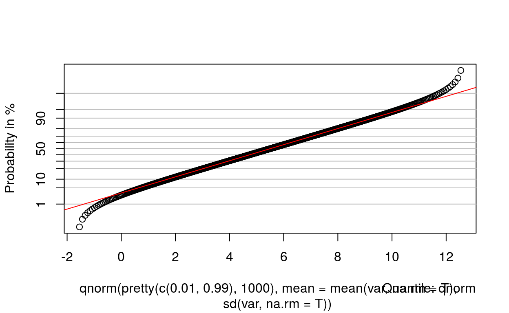
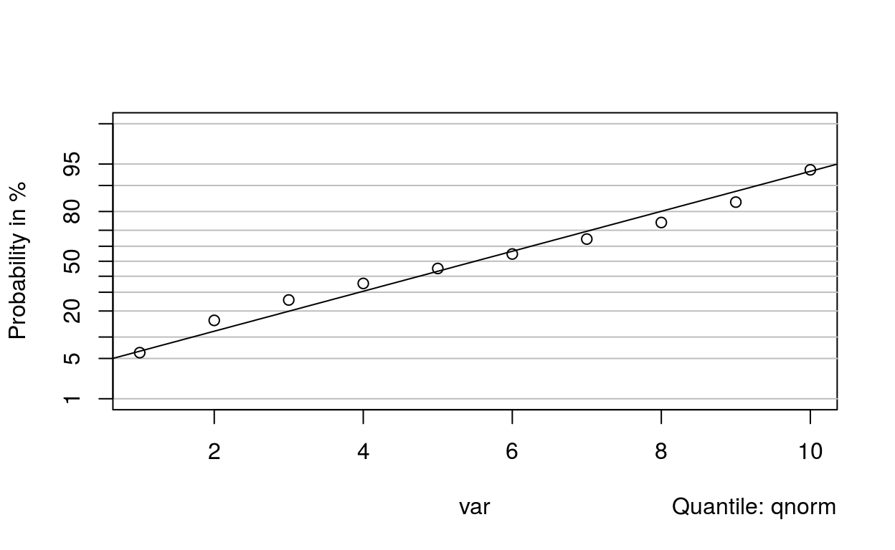

##Introduction The previous chapter illustrated the use of Interval Estimation techniques to provide a range of plausible values for a population parameter based on the corresponding sample statistic and its estimated standard error. The resulting interval allowed statements to be made regarding the likely value of parameters (in particular the mean and median) in the population.
This chapter introduces hypothesis testing as a different option (and complement) to interval estimation. Several of the Illustrations analysed in the previous chapter will be reanalysed using this different approach and the benefits (and lack there of) of hypothesis testing discussed.
A hypothesis test, or statistical test of significance, is a procedure for making formal statements about whether or not a population parameter could conceivably take a particular pre-determined value (often zero!) based on a sample of data from the population.
How could it be proved that all male basketball players are taller than 175 cm (5 feet 9 inches)? Even if the heights from a sample of thousands of male basketball players were recorded, and each one was taller than 175 cm, the hypothesis would still not be proven. If on the other hand, a solitary basketball player smaller than 175 cm is found, the hypothesis has been disproved immediately. This example demonstrates that there is a simpler logical framework for disproving hypotheses than for proving them. For this reason, a hypothesis test typically begins by stating the converse of the key hypothesis of interest, called the Null Hypothesis, and attempts to disprove this.
A typical scenario involves the comparison of the mean of two distinct populations (e.g. a simple Between Subject Design with one factor at 2 levels). There are two possibilities under consideration: the population means are equal or the population means are different. Define the two competing hypotheses:
H0: The difference in the population means is zero; H1: The difference in the population means is not zero.
where the first hypothesis Ho is referred to as the Null Hypothesis and the second hypothesis H1 is the Alternative Hypothesis. The Alternative Hypothesis is the hypothesis that must be true if the Null Hypothesis is false.
Both hypotheses are statements relating to population parameters and the object of the procedure is to decide whether the Null Hypothesis should be rejected or not. Rather than try to prove that the Alternative hypothesis is true, the aim is to provide evidence against the Null hypothesis, in favour of a more plausible Alternative.
Measuring Evidence against the Null Hypothesis: Test Statistics and P-Values
What would constitute evidence against the Null hypothesis in the comparison of the mean of two distinct populations? A natural choice for such a test statistic might be the difference in the two sample means. However, both sample means are estimates of their corresponding parameter. Recall from the last chapter that the estimated standard error (ese) provides an estimate as to the precision of the sample statistic, the larger the ese the less precise the statistic is as an estimate of the corresponding parameter. One proposed test statistic, used to provide evidence against the Null Hypothesis in a two-sample comparison of means, involves the ratio of the difference in the two sample means and the ese of the difference in sample means. It is formally defined as
\[t = \displaystyle\frac{difference\quad in\quad sample\quad means}{ese\quad of\quad the\quad difference\quad in\quad sample\quad means}\]
Numerical values of the t-test statistic distant (i.e. either negatively or positively) from zero suggest that the difference in sample means is large, relative to the combined variability in their estimates; small values close to zero suggest that the sample means were quite close and that their difference is indistinguishable from the variability in their estimates.
A probability (of an event of interest) is always evaluated on a scale from 0 to 1 where the chances of the event of interest happening become more likely as the probability approaches 1 and less and less likely as it approaches 0. An equivalent way of looking at the test statistic above is to consider the probability of observing a more “extreme” value than that actually observed from the data if the samples did arise from populations with the same population mean (i.e. if the Null Hypothesis was true). This probability is referred to as the P-value (‘P’ for probability) and is central in the decision making process in hypothesis testing.
The notion of Statistical Significance represents an observed effect that was ‘unlikely to have occurred by chance’. This is formalised in the hypothesis testing paradigm by determining when a P-value is small enough to warrant rejecting the Null Hypothesis. The choice of such a “small enough value” is known as the Significance Level and is traditionally set at 0.05, so that a P-value less than or equal to 0.05 is thought to provide enough evidence to reject the Null Hypothesis. In such a case, then the data are said to have produced a ‘statistically significant’ conclusion and a decision is made to reject the Null Hypothesis.
The Illustration on Soccer Fitness, introduced previously in Chapters 3 and 4, involved a comparison of two population means. A 95% Confidence Interval for the difference in population mean CMJ Height (Seniors minus Youths) ranged from 3.05 to 10.13 cm (Box 4.3.1) providing evidence of a higher mean CMJ Height in the population of Senior soccer players. It may be rightly claimed that conclusion has been achieved by virtue of the 95% CI providing a credible range for the parameter of interest, namely the difference in the population means. This interval did not contain zero implying that the population means are significantly different.
What is a hypothesis test adding to the evidence provided by the interval estimate? The answer is nothing! Historically hypothesis testing was used before interval estimation ideas were ‘developed’ and, although it adds little, the approach is still used extensively in Sports and Exercise Science - often pointlessly as in this example. There are, however, a number of scenarios where it is useful – for example in the ideas of Model Choice introduced in later chapters. Although hypothesis testing is, strictly speaking, unnecessary for the examples presented here, it is useful to introduce the basic idea here rather than in more complicated situations where interval estimation is much less effective or indeed even ‘impossible’.
For completeness, and as an initial illustration for introducing the ideas of hypothesis testing in practise, an analysis of the Soccer Fitness data using hypothesis testing now follows.
Aim: To compare the mean Counter Movement Jump (CMJ) Height in the populations of Senior and Youth soccer players.
Analysis: The purpose of the analysis is to decide whether there is enough evidence in the sample data to suggest that the mean CMJ Height differs in the two populations. The box plots suggested that the CMJ Height distribution was plausibly Normal in both the populations of Youth and Senior soccer players. The relevant Null and Alternative Hypothesis for this example are
H0: The difference in population mean CMJ Height for Youth and Senior soccer players is zero; H1: The difference in population mean CMJ Height for Youth and Senior soccer players is not zero.
Two-sample T for SOCCER_FITNESS$CMJump by Squad: Youth and Seniort.test((filter(SOCCER_FITNESS,...))$CMJump,
(filter(SOCCER_FITNESS,...))$CMJump)t.test((filter(SOCCER_FITNESS,Squad == 'Youth'))$CMJump,
(filter(SOCCER_FITNESS,Squad == 'Senior'))$CMJump)t.test((filter(SOCCER_FITNESS,Squad == 'Youth'))$CMJump,
(filter(SOCCER_FITNESS,Squad == 'Senior'))$CMJump)strict_check(success = "The value of the test statistic (referred to as T-Value in the output) is 3.87 which is not directly interpretable. The more useful measure is the P-value (highlighted in bold in Box 5.2.1) which is reported as 0.001 and hence it can be claimed that, if the two populations had the same mean, the chances of observing a difference (at least as extreme) as in the actual two sample means is less than one in a thousand. Since this P-value is much less than the conventional significance level of 0.05, the Null Hypothesis can therefore be rejected and hence the Alternative Hypothesis that the difference in the two population means is not zero is assumed to be true.
Conclusion: There is convincing evidence of a significant difference in mean CMJ Height in the population of Senior and Youth soccer players (P=0.001).")Aim: To assess whether the Controls and Exercisers were comparable at baseline in terms of this measure of Balance.
Plot a box plot of pre study balance by regimeggplot(data = filter(OSTEOPOROSIS,Time=="Before"),...)ggplot(data = filter(OSTEOPOROSIS,Time=="Before"),mapping = aes(x = Regime, y = Balance)) +
geom_boxplot() +
coord_flip()ggplot(data = filter(OSTEOPOROSIS,Time=="Before"),mapping = aes(x = Regime, y = Balance)) +
geom_boxplot() +
coord_flip()strict_check(success = "")The Null and Alternative Hypothesis for this example are H0: The difference in population mean Balance for Exercise and Control (before the study) is zero; H1: The difference in population mean Balance for Exercise and Control (before the study) is not zero.
Two-sample T for Balance (cm) Time == Before, Regime == Exercise and Controlt.test((filter(OSTEOPOROSIS,...))$Balance,
(filter(OSTEOPOROSIS,...))$Balance)t.test((filter(OSTEOPOROSIS,Time=="Before",Regime == "Exercise"))$Balance,
(filter(OSTEOPOROSIS,Time=="Before",Regime == "Control"))$Balance)t.test((filter(OSTEOPOROSIS,Time=="Before",Regime == "Exercise"))$Balance,
(filter(OSTEOPOROSIS,Time=="Before",Regime == "Control"))$Balance)strict_check(success = "")The P-value of 0.941 is (much) larger than 0.05 and hence there is no significant difference in mean Balance for the Exercise and Control Regimes. The P-value indicates that there is approximately a 94% chance of seeing at least as much a difference in sample means as observed due to sampling variability alone if the populations from which they were chosen had equal means. The data are thus “very consistent” with the Null Hypothesis and there is no convincing evidence in the sample to suggest that the populations are different at baseline in terms of mean Balance.
Such a result tends to be reported as ‘there was no significant difference between the Regimes at baseline, in terms of mean Balance (P=0. 94)’. The difference in sample means is attributable to sampling variability and not to any systematic difference in the population means. Notice that the same conclusion was available immediately by looking at the interval estimate of the difference in population means, i.e. (-5.64, 5.25). As the interval contains zero then it can be claimed that zero is a plausible value for the true difference in mean Balance (very much so since zero is in the middle of this interval) and hence there is no evidence against the population means being different.
Conclusion: There is no evidence of a significant difference in mean Balance between the Regimes at baseline (P=0.94).
The interval estimation strategy, employed in Chapter 4 for Paired-Sample problems, involved the creation of a new variable representing the difference (i.e. the change, improvement, reduction as appropriate) in the response variable for each subject. An appropriate interval estimate for the population mean difference provides a range of credible values for the magnitude of the ‘intervention effect’ i.e. the difference in population means. In addition, it allows the researcher to determine if the difference can be deemed significant (i.e. whether the interval estimate excludes zero) but also allows the researcher to determine the direction of any change and its magnitude.
The corresponding Hypothesis needed for analysing paired data is aptly called the Paired t-test. The Null Hypothesis in this case is that the population mean difference is zero, where the Alternative Hypothesis is that the population mean difference is not zero. Once again the hypothesis test offers little, if any, improvement on the information already provided by the corresponding Confidence Interval for a mean difference. This is demonstrated in the following illustration.
Aim: To investigate whether a concurrent strength and high intensity interval-training intervention has improved the VO2 max of the soccer players during the 10-week study period, by comparing the VO2 max at the start and the end of the intervention.
Paired T for TRAINING_INTERVENTION VO2_max_post - VO2_max_pret.test(... - ...)t.test(TRAINING_INTERVENTION$VO2_max_post - TRAINING_INTERVENTION$VO2_max_pre)t.test(TRAINING_INTERVENTION$VO2_max_post - TRAINING_INTERVENTION$VO2_max_pre)strict_check(success = "")The P-value is given as 0.000. Be careful here as statistical software tends to round P-values off to three decimals. The actual P-value for this analysis is actually less than one in a billion! The convention is to round it to the level of the last decimal provided by the software i.e. <0.001 here. The result provides convincing evidence of a significant mean difference in max over the 10-week study period since the P-value is (much) less than 0.05.
Conclusion: There was strong evidence of a significant improvement (P<0.001) in mean VO2 max across the study, in the population of youth players of interest. This result alone is quite uninformative as it provides no indication of the likely magnitude of the improvement across the season. The 95% CI for the population mean improvement is once again much more informative as it quantifies the magnitude of such an improvement (i.e. around 4 to 6 \(ml.kg^{-1}.min^{-1}\) which corresponds roughly to a 6% to 10% improvement relative to a typical Pre-Study VO2 max of around 70 \(ml.kg^{-1}.min^{-1}\).
Interval Estimation techniques for analysing designs with one Between and one Within Subject Factor were introduced in the previous chapter. For completeness the two Illustrations from there are re-analysed using hypothesis tests as this is almost certainly the most common type of designed study in Sports and Exercise Science!
Aim: To investigate whether or not an exercise regime can significantly improve the Balance (as measured by functional reach test) of osteoporotic women over a two-month period of exercise over any ‘natural’ improvement of controls.
Analysis: The Null and Alternative Hypotheses needed in a hypothesis test to compare the mean improvement (taken here as Balance “After the Study” minus Balance “Before the Study”) over the study period are
H0: The difference in mean improvement in Balance for Exercisers and Controls in the population is zero; H1: The difference in mean improvement in Balance for Exercisers and Controls in the population is not zero.
Two-sample T in OSTEOPOROSIS data for Improvement in Balance Time (After-Before) by Regime == Exercise and Controlt.test(... - ...,
... - ...)t.test((filter(OSTEOPOROSIS,Time == "After",Regime == "Exercise"))$Balance -
(filter(OSTEOPOROSIS,Time == "Before",Regime == "Exercise"))$Balance,
(filter(OSTEOPOROSIS,Time == "After",Regime == 'Control'))$Balance -
(filter(OSTEOPOROSIS,Time == "Before",Regime == 'Control'))$Balance)t.test((filter(OSTEOPOROSIS,Time == "After",Regime == "Exercise"))$Balance -
(filter(OSTEOPOROSIS,Time == "Before",Regime == "Exercise"))$Balance,
(filter(OSTEOPOROSIS,Time == "After",Regime == 'Control'))$Balance -
(filter(OSTEOPOROSIS,Time == "Before",Regime == 'Control'))$Balance)strict_check(success = "Since the P-value is (just) less than 0.05 the mean improvement is deemed significantly different. To make any meaningful comment from this statement it is necessary to look at the 95% CI for the population mean difference in improvement (as in Illustration 4.61 previously). The interval is strictly positive (i.e. a significant result has been identified) however the direction and magnitude are available (i.e. the mean improvement is higher for the Exercisers). ")In such scenarios, it is often thought interesting to investigate whether there was evidence of a significant mean improvement separately in each of the two Regimes i.e. separately for Controls and Exercisers. The appropriate Null and Alternative Hypotheses needed for such a hypothesis test involving the Controls would be
H0: The mean improvement in Balance for the Control population is zero; H1: The mean improvement in Balance for the Control population is not zero.
The P-value from the corresponding One-Sample t-test output (Box 5.4.1.2) is returned as 0.272 which is interpreted as insufficient evidence of a significant mean improvement in Balance in the Control population across the study.
One-Sample T in OSTEOPOROSIS data for Improvement in Balance (After-Before) by Controlt.test(... - ...)t.test((filter(OSTEOPOROSIS,Time=="After",Regime == 'Control'))$Balance -
(filter(OSTEOPOROSIS,Time=="Before",Regime == 'Control'))$Balance)t.test((filter(OSTEOPOROSIS,Time=="After",Regime == 'Control'))$Balance -
(filter(OSTEOPOROSIS,Time=="Before",Regime == 'Control'))$Balance)strict_check(success = "")t.test(... - ...)t.test((filter(OSTEOPOROSIS,Time=="After",Regime=="Exercise"))$Balance -
(filter(OSTEOPOROSIS,Time=="Before",Regime=="Exercise"))$Balance)t.test((filter(OSTEOPOROSIS,Time=="After",Regime=="Exercise"))$Balance -
(filter(OSTEOPOROSIS,Time=="Before",Regime=="Exercise"))$Balance)strict_check(success = "")Conclusions: There was evidence of a significant difference in the mean improvement (P=0.046) in Balance between Controls and Exercisers over the two-month intervention period. Furthermore, when considering the Controls and Exercisers separately, there was no evidence of a significant mean improvement for the Controls (P=0.272) while there was convincing evidence for the Exercisers (P<0.001).
Aims: To compare Relative Intensity during the Aerobic Dance and Walking sessions overall and then separately for Males and Females.
One-Sample T in WALKDANCE data for male Peak_VO2_Dance - Peak_VO2_Walk (Sex==Male)t.test(... - ...)t.test(filter(WALKDANCE,Sex=='Male')$Peak_VO2_Dance -
filter(WALKDANCE,Sex=='Male')$Peak_VO2_Walk)t.test(filter(WALKDANCE,Sex=='Male')$Peak_VO2_Dance -
filter(WALKDANCE,Sex=='Male')$Peak_VO2_Walk)strict_check(success = "")t.test(... - ...)t.test(filter(WALKDANCE,Sex=='Female')$Peak_VO2_Dance -
filter(WALKDANCE,Sex=='Female')$Peak_VO2_Walk)t.test(filter(WALKDANCE,Sex=='Female')$Peak_VO2_Dance -
filter(WALKDANCE,Sex=='Female')$Peak_VO2_Walk)strict_check(success = "When reporting such analyses in a paper or a presentation it has become common practice to present the P-value without quoting the relevant Null and Alternative hypothesis. It is ‘assumed’ that the hypotheses are obvious from the context! For example, the results tend to be presented as ‘there was a significant difference in Relative Intensity when carrying out an Aerobic Dance class compared to a Walking session separately for both Males (P=0.001) and Females (P=0.021)’. Hypothesis testing has a language of its own which typically says very little in practical terms!")Two-sample T in WALKDANCE data for Peak_VO2_Dance - Peak_VO2_Walk (Sex==Male) vs Peak_VO2_Dance - Peak_VO2_Walk (Sex==Female)
##
## Welch Two Sample t-test
##
## data: filter(WALKDANCE, Sex == "Male")$Peak_VO2_Dance - filter(WALKDANCE, and filter(WALKDANCE, Sex == "Female")$Peak_VO2_Dance - filter(WALKDANCE, Sex == "Male")$Peak_VO2_Walk and Sex == "Female")$Peak_VO2_Walk
## t = 1.2994, df = 8.4577, p-value = 0.2281
## alternative hypothesis: true difference in means is not equal to 0
## 95 percent confidence interval:
## -4.363871 15.877407
## sample estimates:
## mean of x mean of y
## 18.17015 12.41338t.test(... - ...,
... - ...)t.test(filter(WALKDANCE,Sex=='Male')$Peak_VO2_Dance -
filter(WALKDANCE,Sex=='Male')$Peak_VO2_Walk,
filter(WALKDANCE,Sex=='Female')$Peak_VO2_Dance -
filter(WALKDANCE,Sex=='Female')$Peak_VO2_Walk)t.test(filter(WALKDANCE,Sex=='Male')$Peak_VO2_Dance -
filter(WALKDANCE,Sex=='Male')$Peak_VO2_Walk,
filter(WALKDANCE,Sex=='Female')$Peak_VO2_Dance -
filter(WALKDANCE,Sex=='Female')$Peak_VO2_Walk)strict_check(success = "Similarly to the conclusion reached through the appropriate interval estimate, this hypothesis test confirms that there was no evidence of a significant difference in the average Aerobic Dance Relative Intensity over the Walking sessions between Males and Females (P=0.230).")Conclusion: There was evidence that mean Relative Intensity was significantly higher when carrying out an Aerobic Dance session compared to a Walking session for both Males \((P=0.001)\) and Females \((P=0.021)\) in the targeted elderly population targeted. There was no evidence however that the typical higher Relative Intensity was different across the sexes \((P=0.230)\).
Several hypothesis tests exist for formally testing whether a variable of interest from a single sample is likely to have arisen from a Normal distribution. Examples here include the wonderfully named Shapiro-Wilks, Anderson-Darling, Kolmogorov-Smirnov and the D’Agostino-Pearson Omnibus tests! The Null hypothesis is the same for each test however, namely that the data arose from a Normal Distribution, with the Alternative Hypothesis that the data originated from some other unspecified distribution. The hypothesis testing approach is useful here as there is really no ‘interval estimate’ available. Note also that this time not rejecting the Null Hypothesis is usually the desired result!
In addition, a Normal Probability plot provides graphical evidence as to whether the Normality assumption is valid. The observed data, in ascending order, are compared to what values would be ‘expected’ if indeed the data were generated from a Normal distribution. This procedure typically carried out by looking at a plot of the sample percentiles (the value of a variable below which a certain percent of observations lie, e.g. there are 10% of observations in a sample less than the 10th percentile) against those ‘expected’. The pattern of points in this plot of “observed against expected from Normal distribution” should approximate a straight line if the Normal distribution is plausible for the variable of interest.
Normality Probability Plots and Anderson-Darling Normality Test
var <- sample(1:10)
p<-probplot(qnorm(pretty(c(0.01,0.99),1000),mean=mean(var,na.rm=T),sd(var,na.rm=T)))
probplot(var,line=F)
lines(p)
ad.test(var)##
## Anderson-Darling normality test
##
## data: var
## A = 0.14111, p-value = 0.9567n general the points are randomly scattered in a linear manner about the ‘reference’ line representing where the data should appear if they were indeed a sample from a Normal population. The level of agreement, although not perfect, is quite good especially for the larger sample sizes. There are a few departures from a linear pattern evident in the plot for the smallest sample size, highlighting that such patterns are plausible under Normality.
In instances involving small samples it becomes more difficult to assess Normality from the plot alone and a hypothesis test can be useful here. The P-values from one such test, the Anderson-Darling Normality Test, are given in the legend in each plot in Figure 5.5. As all of the P-values here are greater than 0.05 there is no convincing evidence against Normality for any of the simulated samples under consideration.
Aim: To formally investigate whether the response variable Walking Time arose from a Normal distribution.
Boxplot Test of time spent walking (Intervention) and time spent walking log scale (Log_Walking_Time_Intervention)ggplot(data = WALK_TO_WORK) +
... +
coord_flip()
ggplot(data = WALK_TO_WORK) +
... +
coord_flip()ggplot(data = WALK_TO_WORK) +
geom_boxplot(mapping = aes(x = 1, y = Intervention)) +
coord_flip()
ggplot(data = WALK_TO_WORK) +
geom_boxplot(mapping = aes(x = 1, y = Log_Walking_Time_Intervention)) +
coord_flip()ggplot(data = WALK_TO_WORK) +
geom_boxplot(mapping = aes(x = 1, y = Intervention)) +
coord_flip()
ggplot(data = WALK_TO_WORK) +
geom_boxplot(mapping = aes(x = 1, y = Log_Walking_Time_Intervention)) +
coord_flip()strict_check(success = "")Normality Probability Test of time spent walking and time spent walking log scale
var<- ...
p<-probplot(qnorm(pretty(c(0.01,0.99),1000),mean=mean(var,na.rm=T),sd(var,na.rm=T)))
probplot(var,line=F)
lines(p)
ad.test(var)
var<- ...
p<-probplot(qnorm(pretty(c(0.01,0.99),1000),mean=mean(var,na.rm=T),sd(var,na.rm=T)))
probplot(var,line=F)
lines(p)
ad.test(var)var<-WALK_TO_WORK$Intervention
p<-probplot(qnorm(pretty(c(0.01,0.99),1000),mean=mean(var,na.rm=T),sd(var,na.rm=T)))
probplot(var,line=F)
lines(p)
ad.test(var)
var<-WALK_TO_WORK$Log_Walking_Time_Intervention
p<-probplot(qnorm(pretty(c(0.01,0.99),1000),mean=mean(var,na.rm=T),sd(var,na.rm=T)))
probplot(var,line=F)
lines(p)
ad.test(var)var<-WALK_TO_WORK$Intervention
...
var<-WALK_TO_WORK$Log_Walking_Time_Interventionstrict_check(success = "The skew in the raw data is noticeable in the plots of Walking Time on the original scale where the median is positioned quite to the left in the IQR in the box plot and the ‘smaller’ Walking Times tend to fall below what would be expected under a Normal distribution. The log transformation appears successful as the box plot here appears reasonably symmetric and the Normal Probability plot of “observed against expected values from a Normal distribution” follow more or less a straight line.
The P-value for the Anderson-Darling Normality Test for the original data is given as being less than 0.005, and therefore the assumption of Normality can easily be rejected for the raw data. The P-value for the same test carried out using the log transformed data is 0.662 and hence the Null Hypothesis is not rejected suggesting that the Normality assumption may be valid in the log scale. ")Conclusion: The box plots, Normal Probability plots and P-values suggest that the Normality assumption is not justified for Walking Time on the original scale of measurement (i.e. minutes) but may well be justified on the log transformed scale. Any analysis that has Normality as an assumption should therefore be carried out on the log transformed data.
##The Misuse of P-values: Significance and Importance. The term ‘significant’ literally means important, noticeable or having a special meaning. When the results of a hypothesis test are reported, the word ‘significant’ has acquired a new meaning to indicate that the resulting P-value was less than the chosen significance level (usually 0.05). There is a natural tendency to assume that a ‘significant result’ is therefore ‘important’ when this is not necessarily the case. Indeed a study is often deemed to have been an immediate success if a significant result has been found!
A P-value may well be very small, say 0.00001, and the Null Hypothesis is therefore conclusively rejected. The hypothesis test has provided very convincing evidence of a significant difference, say, in the population means and everyone is excited! If instead a 95% CI for the true difference in population means is calculated and the results are returned as 0.5 to 1.0 seconds would the level of excitement be as great? This depends on what is considered a meaningful or important difference given the aims of the study. If for example the interval represented an improvement in marathon finishing time (in seconds) the ‘intervention’ would be pointless but would be very meaningful if it was a 100 m sprint time improvement!
Don’t ignore the lack of significance however! Failing to reject the Null Hypothesis may be due to the sample size being too small (i.e. a lack of power in the study) and a larger sample may well have detected a significant and important result. Always design the study carefully , and use a sample size based on a power calculation to ensure that the study is worth carrying out at all!